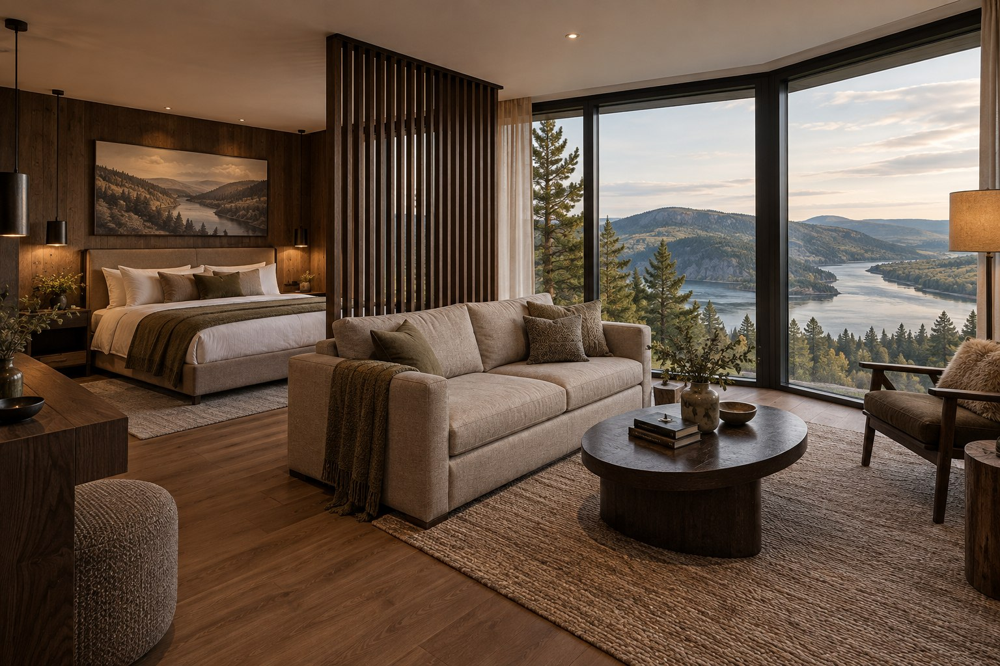
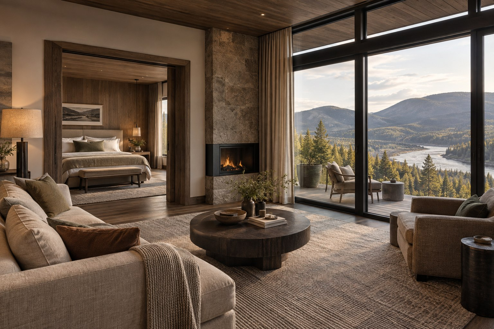
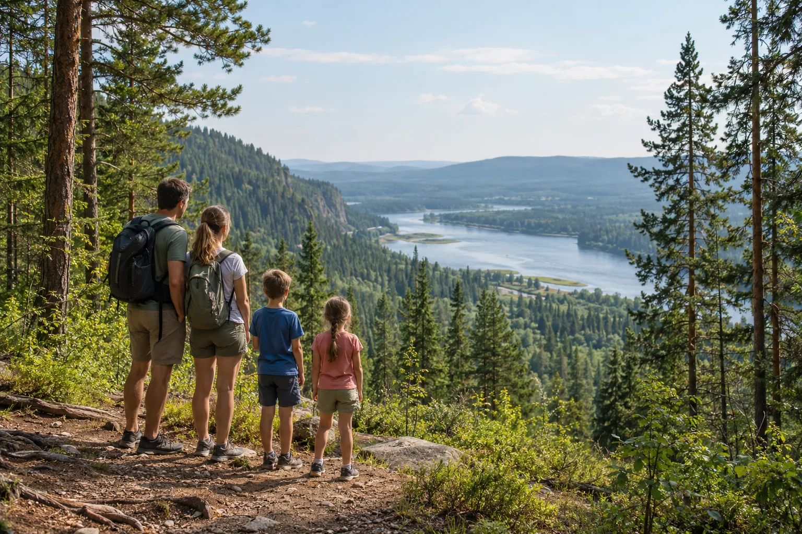

Красноярск
До 2 гостей · 28 м²
Номер с отделкой из тёмного дерева и видом на сосновые склоны.
До 4 гостей · 38 м²
Большое угловое окно и кресло с видом на речную долину.

До 4 гостей · 52 м²
Спальная зона и гостиная с большими окнами.

До 6 гостей · 76 м²
Гостиная, отдельная спальня и терраса над лесным склоном.
